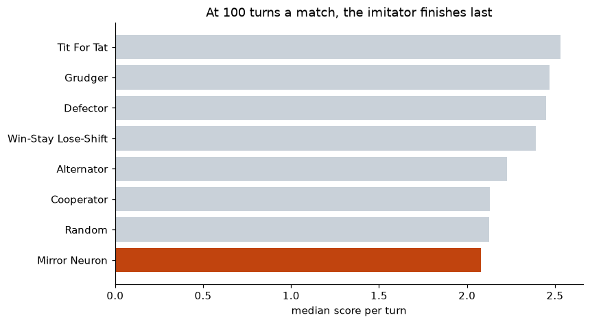
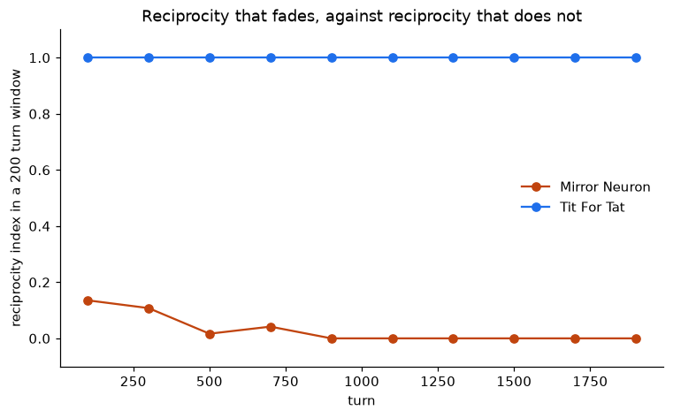
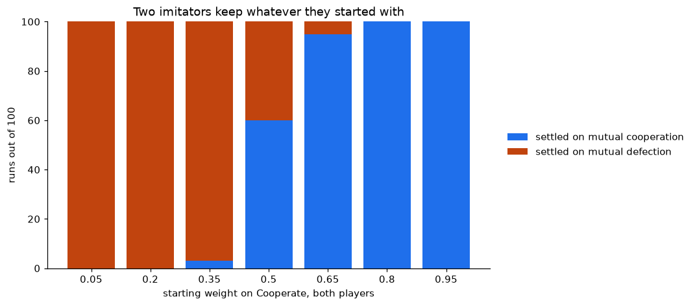
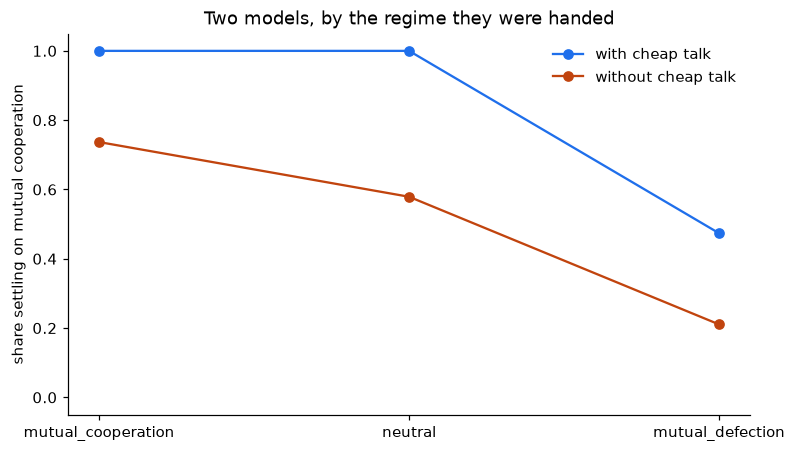
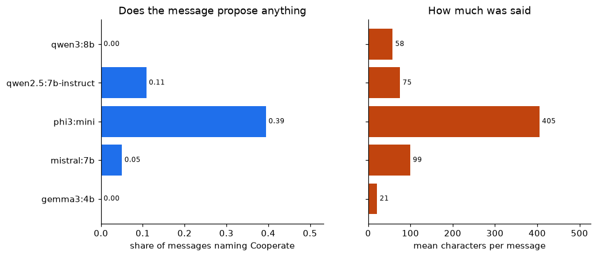

Un stage de recherche au GAEL, de janvier à avril 2025.
Dans un jeu de prix répété, les joueurs humains convergent vers des prix tacitement collusifs plutôt que vers l'équilibre concurrentiel. Savoir si les algorithmes soutiennent ce comportement, le brisent ou l'intensifient est une question ouverte en économie industrielle, aux conséquences directes pour la politique de la concurrence. Encadré par Alexis Garapin (UGA) et Olivier Bonroy (INRAE) au Grenoble Applied Economics Laboratory.
Le stage ne tranche pas la question. Ce qu'il a produit est ci-dessous, avec les chiffres réellement atteints.
Huitième sur huit, derrière un tirage à pile ou face


Les neurones miroirs s'activent aussi bien quand on agit que quand on observe quelqu'un agir, ce qui en fait un substrat plausible de l'imitation. L'agent est cette idée au plus simple : observer une action multiplie son poids puis renormalise. Rien ne lui dit de rendre la pareille, et le rapport attend malgré tout que le Tit-for-Tat émerge de cette mise à jour.
Il n'en émerge pas. Écrite en forme close, la règle est
wi ∝ wi(0)(1+η)ni :
tout l'état de l'agent tient en un couple de compteurs, et son action
suivante ne peut donc pas dépendre de l'ordre dans lequel il les a vus. Le
Tit-for-Tat est une fonction du seul dernier tour, que cette règle n'a aucun
moyen de représenter. Ce qui émerge est un appariement de fréquences :
une réciprocité de 0,123 contre 1,000 pour le Tit-for-Tat, qui retombe à
exactement zéro dès le tour 800, l'agent se figeant en joueur constant.
Augmenter le taux d'apprentissage ne la rachète pas.
La durée d'un match décide du classement : une seule longueur ne fait donc pas le résultat. L'agent est au plus bas à 20 tours, avec 2,000 contre 2,211 pour le tirage à pile ou face, et reste dernier jusqu'à 100. À 500 il est sixième et c'est le tirage qui ferme la marche, non qu'il ait appris quoi que ce soit, mais parce qu'il s'est arrêté : dans les derniers tours d'un long match il est figé face à six des sept adversaires, coopérant toujours avec les coopératifs et trahissant toujours les autres. Face à un plateau de joueurs réciproques, une constante vaut mieux qu'une pièce lancée.
Le tournoi est un toutes rondes : huit joueurs, chacun affrontant tous les autres et lui-même sur 100 tours, répété 20 fois car deux d'entre eux tirent leurs coups au hasard. Les gains sont les gains classiques, 3 pour la coopération mutuelle, 1 pour la défection mutuelle, 5 pour trahir un coopérateur et 0 pour être trahi, et un joueur est classé sur son score médian par tour, tous matchs confondus. Cela récompense la tenue face à l'ensemble du plateau : le Defector remporte le plus de matchs, sept, et ne finit que troisième.
Sur la question posée en ouverture, le mécanisme entretient la coopération tacite, sans jamais la rompre ni l'intensifier. Deux imitateurs forment une boucle de rétroaction à deux états absorbants et rien entre les deux : sur 700 parties, ils se sont figés sur la défection mutuelle ou sur la coopération mutuelle selon leur point de départ, et jamais sur autre chose. Depuis un poids initial de 0,05, c'est la défection mutuelle à chaque fois, à 1,00 par tour ; depuis 0,8, la valeur retenue par le stage, c'est la coopération mutuelle à chaque fois, à 2,995 pour un plafond de 3. Cette règle d'imitation est un cliquet sur la condition initiale plutôt qu'une voie vers la collusion, ce qui la sépare des Q-learners de Calvano et al. (2020), qui trouvent la collusion, eux, en lisant les gains.

Axelrod a fourni les adversaires, le moteur de match et la comptabilité des gains : rien de tout cela n'est écrit ici. Chaque nombre ci-dessus est un CSV versionné, et une étape d'intégration continue les régénère à chaque poussée puis échoue à la moindre différence, de sorte qu'une figure ne peut pas s'écarter en silence du code qui l'a tracée.
Trois modèles sur quatre ne savent pas sortir d'un régime imposé, et parler n'en libère qu'un
llm/, c'est l'homo silicus. Le rapport cite Horton, Filippas et
Manning (2023) et nomme la méthode dans sa conclusion sans jamais
l'appliquer. Cinq modèles à poids ouverts, exécutés localement et hors ligne,
jouent les jeux que le cadre du rapport définit : le dilemme du prisonnier
itéré et séquentiel, le jeu de l'ultimatum et le jeu du dictateur. La grille
itérée a tourné le 2026-08-17 : 220 matchs de 30 tours, dont 210 lisibles.

Sur une ouverture de défection mutuelle et sans canal, qwen2.5, gemma3 et qwen3 font défection sur les 30 tours, quatre matchs sur quatre, un taux de coopération exactement nul. C'est le cliquet de l'imitateur ci-dessus, reproduit dans un modèle de langage. Un message non contraignant fait ensuite passer qwen2.5 de 0,00 à 1,00 et laisse gemma3 et qwen3 à 0,00, tandis que mistral sort de la même ouverture sans aucun message et que qwen3 fait défection même depuis une ouverture neutre en silence. Le canal n'est donc ni nécessaire ni suffisant : quels modèles savent sortir d'un régime imposé est un fait sur les modèles, pas sur les modèles de langage.

C'est là l'essentiel. Le canal n'échoue pas parce qu'une proposition est faite puis ignorée. gemma3 envoie des fragments phatiques de 21 caractères en moyenne, « Interesting. », « Keep going. », et qwen3 envoie une prose collaborative et fluide, « Let's keep the pressure on and make every round count. », tout en faisant défection sur les trente tours. Un modèle peut produire un texte qui se lit comme un discours de coopération sans que son comportement en soit touché. L'argument complet, avec la littérature où il se situe, est dans l'article. phi3:mini a perdu 10 de ses 44 matchs sur des réponses illisibles et est rapporté comme illisible plutôt que comme un résultat.
Les deux sont frères à dessein, et la portée de ce rapprochement est étroite : ce rapport a proposé ce mécanisme et affirmé que le Tit-for-Tat en émerge, donc les deux moitiés éprouvent cette affirmation sur les mêmes adversaires avec une seule mesure. Asseoir des modèles de langage à côté de stratégies classiques n'est pas en soi une nouveauté, et Payne et Alloui-Cros (2025) revendiquent le premier tournoi de ce genre. Les deux joueurs exposent les deux mêmes méthodes, donc un seul banc d'essai peut accueillir l'un ou l'autre, et la comparaison qui vaut la peine oppose un mécanisme qui ne sait qu'imiter à un autre qui sait aussi parler et se justifier. Le cheap talk et l'explicabilité sont deux des huit notions que le rapport définit, et les deux que l'agent hebbien n'a aucun moyen d'atteindre.
Deux couches. Tout ce que le stage a rendu en mai 2025 est conservé dans
original/ octet pour octet, y compris ce qui est faux, que ce
dossier recense au lieu de le corriger en silence.
Le stage s'est terminé en avril 2025. Le travail ci-dessus a été refait
ensuite, sur mon temps libre, parce qu'il n'était pas achevé : la simulation
ne pouvait pas s'exécuter de bout en bout. Il est posé à côté de
original/ plutôt que par-dessus, et ne renverse pas les
conclusions du stage. Ce qui change, c'est que les affirmations non étayées
par le code sont nommées, et que les figures portent enfin les légendes
qu'elles calculaient puis jetaient.
Une analyse d'équilibre se trouvait ici également. Elle est partie avec le projet Prolog du cours dont elle étudie le jeu, dans University-Coursework. Ce jeu n'apparaît pas dans le rapport de stage.